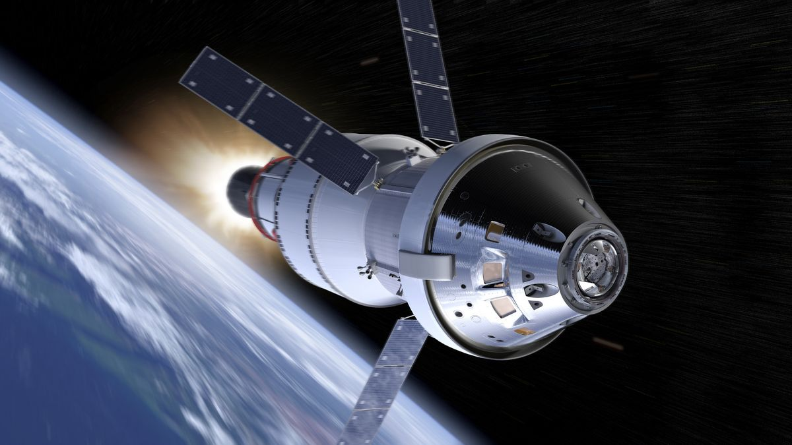
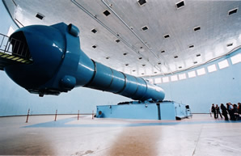
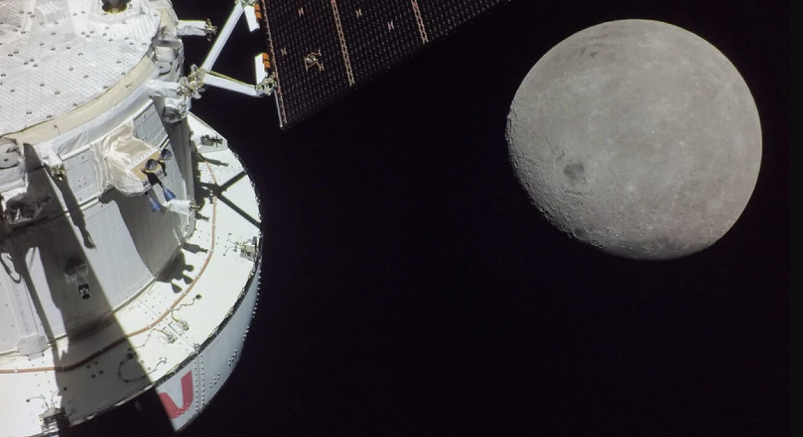

Prima di affrontare i calcoli fisici legati alla missione spaziale, è necessario comprendere il contesto dell’operazione. Leggete attentamente l'articolo al seguente link:
Artemis 2: lancio, scopo e dettagli della missione spaziale con equipaggio verso la Luna (Geopop)

Al termine della lettura, rispondete alle seguenti domande per sbloccare il livello successivo.
1. Qual è l'obiettivo primario della missione Artemis II?
A) Effettuare il primo allunaggio umano al Polo Sud lunare.2. Quale veicolo spaziale, spinto dal potente razzo SLS, ospiterà l'equipaggio durante il viaggio?
A) La navicella Crew Dragon.3. Che tipo di traiettoria seguirà la navicella per tornare sulla Terra in sicurezza senza necessità di accensioni motore prolungate?
A) Un'orbita circolare bassa (Low Lunar Orbit).Prima di affrontare lo spazio, l'equipaggio deve prepararsi alle intense accelerazioni della fase di lancio. La centrifuga umana di addestramento è composta da un braccio meccanico alla cui estremità è fissata una cabina che si muove di moto circolare uniforme.

Consideriamo un astronauta di massa m = 75 kg all'interno di una centrifuga con un braccio di raggio r = 8.0 m. Durante un test di resistenza, la rotazione deve generare sulla cabina un'accelerazione centripeta pari a 4g (dove g = 9.81 m/s² è l'accelerazione di gravità terrestre).
Lasciata l'orbita terrestre, occupiamoci della forza di gravità subìta dalla navicella Orion durante il suo viaggio. La navicella Orion ha una massa approssimativa di m = 26500 kg.
Utilizza i seguenti dati:
Approssimiamo un'ipotetica traiettoria della navicella Orion attorno alla Luna come un'orbita circolare uniforme a un'altitudine h = 10.000 km dalla superficie lunare (Raggio Luna = 1737 km). Affinché l'orbita sia stabile, la forza di gravità lunare funge da forza centripeta.
